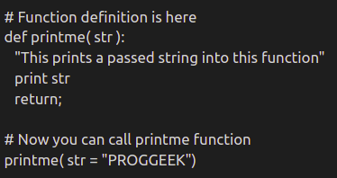
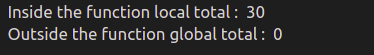

9.Functions
Python Functions.
A function is a block of code which only runs when it is called. You can pass data,known as parameters,into a funtion.
A function can return data as a result.
A function is a block of organized, reusable code that is used to perform a single, related action. Functions provide better modularity for your application and a high degree of code reusing.
As you already know, Python gives you many built-in functions like print(), etc. but you can also create your own functions. These functions are called user-defined functions.
Defining a Function :

Calling a Function :
To call a function,use the function name followed by parenthesis

Arguments :
Information can be passed into functions as arguments.Arguments are specified after the function name,inside the parenthesis.
can add as many arguments as we want,just separate them with a comma.

For Example :
Let us consider the below example, this is example of sum of numbers in a list.

Types of Arguments :
You can call a function by using the following types of formal arguments −
- Required arguments
- Keyword arguments
- Default arguments
- Variable-length arguments
Required arguments :
Required arguments are the arguments passed to a function in correct positional order. Here, the number of arguments in the function call should match exactly with the function definition.

When the above code is executed, it produces the following result −

Keyword arguments :
Keyword arguments are related to the function calls. When you use keyword arguments in a function call, the caller identifies the arguments by the parameter name.
This allows you to skip arguments or place them out of order because the Python interpreter is able to use the keywords provided to match the values with parameters. You can also make keyword calls to the printme() function in the following ways −

When the above code is executed, it produces the following result −

Default arguments :
A default argument is an argument that assumes a default value if a value is not provided in the function call for that argument. The following example gives an idea on default arguments, it prints default age if it is not passed −

When the above code is executed, it produces the following result −

Variable-length arguments :
You may need to process a function for more arguments than you specified while defining the function. These arguments are called variable-length arguments and are not named in the function definition, unlike required and default arguments.

When the above code is executed, it produces the following result −

Scope of Variables :
Variables that are defined inside a function body have a local scope, and those defined outside have a global scope.
This means that local variables can be accessed only inside the function in which they are declared, whereas global variables can be accessed throughout the program body by all functions. When you call a function, the variables declared inside it are brought into scope. Following is a simple example −

When the above code is executed, it produces the following result −
